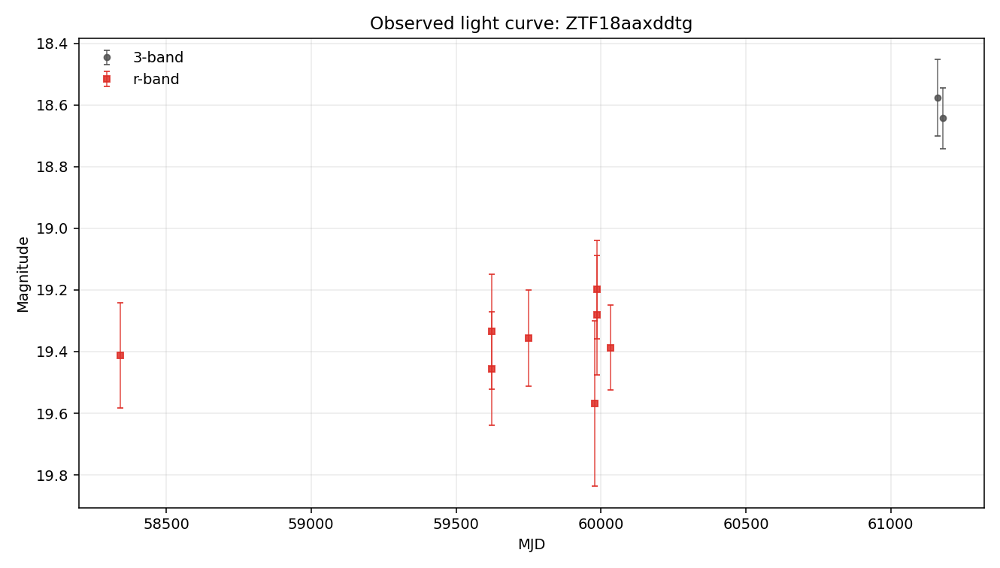
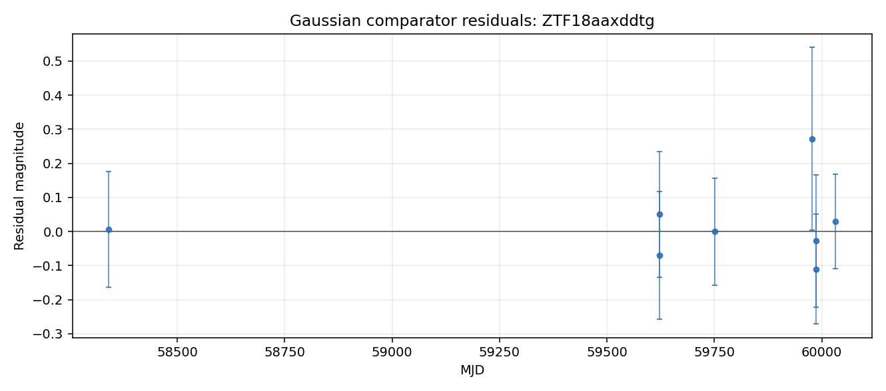

Static evidence report generated from the local case-file JSON.
Evidence Narrative
Mixed evidence with cautious interpretation
The Gaussian bump comparator fit the r-band detections cleanly within the reported errors. The variability texture comparator found changes that are comparable to the reported photometric errors. Together, these favor a simple one-bump description over repeated or irregular texture in the current r-band detections. Coverage appears sparse or uneven, so cadence may affect the comparison.
Evidence Sections
Baseline transient-shape checkreasonable_fit
The Gaussian bump comparator fit the detections reasonably within the reported errors.
Variability texturemeasurement_level
The measured changes are comparable to reported photometric errors.
Standard feature summarycomputed
Descriptive light-curve features were computed from 8 usable r-band point(s) for comparison across objects.
Template-family probelimited
Template-family probing was limited because required context such as redshift is unavailable.
Cross-survey contextnot_requested
External catalog context was not requested for this case-file run.
What Argus Can Say
Standard descriptive features are available for comparison across objects.
No spectroscopic information is recorded in this case file.
What Argus Cannot Say
Argus does not identify the object type.
Argus does not certify that the source is unusual.
Argus does not treat broker or catalog labels as ground truth.
Argus does not treat template-family probes as object identity.
Recommended Next Checks
Add verified redshift or context before interpreting template-family probes.
Run cross-survey context if network access and optional dependencies are available.
Inspect forced photometry around recent detections if available.
Caveat: This narrative summarizes evidence layers. It is not a physical classification.
Visual Summary

Observed light curve

Gaussian comparator residuals show where the simple bump model under- or over-predicts the observed magnitudes.
No broker or catalog classification metadata is attached.
Any external labels shown here are metadata only, not Argus conclusions.
Light-Curve Summary
Detections
10
Non-detections
212
Filters observed
g, r
First MJD
58263.4
Last MJD
61180.5
Time span days
2917.05
Most recent detection MJD
61180.5
Longest detection gap days
1282.25
Per-Filter Summary
Filter
Detections
Non-detections
Mag min
Mag max
Delta mag
g
0
78
Not available.
Not available.
Not available.
r
8
110
19.1985
19.5688
0.370255
Feature Summary
Source
light-curve
Band
r
Status
computed
Usable points
8
Feature Values
amplitude
0.185128
inter_percentile_range_25
0.125543
maximum_slope
32.7005
median
19.3713
median_absolute_deviation
0.0625625
standard_deviation
0.111725
Interpretation
Descriptive light-curve features were computed for r-band detections using the light-curve package. The r-band observed brightness range is moderate (0.37 mag). Standardized scatter is moderate for this detection set (0.11 mag). These features support comparison across objects.
Caveat
Feature values are descriptive summaries only and do not identify the object type.
Anomaly Assessment
Status
available
Score
6
Label
high
Drivers
10 detections provide a usable local record.
Coverage spans 2917 days, enough to inspect long-baseline behavior.
Both g and r observations are present for cross-band review.
Standard descriptive light-curve features were computed.
Catalog-context status is not_requested; external context remains limited.
Tensor mask diagnostics are available (87% bins masked).
Cautions
Template-family probe is limited: missing_required_context.
This deterministic assessment supports review triage only. It is not a classification, model verdict, or claim about physical identity.
Caveat: This deterministic assessment supports review triage only. It is not a classification, model verdict, or claim about physical identity.
Comparison Summary
Mostly consistent with a single smooth bump
The Gaussian bump comparator fit the r-band detections cleanly within the reported errors. The variability texture comparator found changes that are comparable to the reported photometric errors. Together, these favor a simple one-bump description over repeated or irregular texture in the current r-band detections. Coverage appears sparse or uneven, so cadence may affect the comparison.
Caveat
This is not a physical classification. It does not identify the object type, physical cause, or special status.
Recommended next check
Inspect residuals and verify that the pattern persists with additional local photometry.
Model Comparisons
Gaussian bump (r-band)
Model type
gaussian_bump
Filter used
r
Status
fitted_baseline
Parameters
amplitude_mag
-0.176797
baseline_mag
19.4069
peak_mjd
59890.9
sigma_days
88.875
Fit Metrics
largest_abs_residual
0.271876
largest_residual_mjd
59977.6
mae
0.0707573
n_points
8
reduced_chi2
0.445771
residual_mean
0.0186941
residual_std
0.107449
rmse
0.109063
Residual Summary
Residuals are concentrated in the most recent portion of the light curve.
The fitted peak time falls in a region with fewer than two nearby detections; peak placement is loosely constrained.
Coverage is highly uneven (largest gap 1282 days vs median gap 44.89 days); fit quality is limited by sparse coverage.
Residual scatter (σ ≈ 0.11 mag) is comparable to the fitted bump amplitude (-0.18 mag) — the data is not well described by a single bump.
Interpretation
A single Gaussian bump was fit to the r-band detections. RMSE = 0.11 mag, reduced χ² ≈ 0.4 — the bump shape is consistent with the data within the reported errors. See residual_summary for where the fit fails.
After 3-point smoothing, counted 1 local extrema/sign change(s).
Robust scatter is comparable to the reported errors.
Interpretation
The r-band detections (8 point(s)) span 0.37 mag with robust scatter 0.09 mag. After 3-point smoothing, 1 local extrema/sign change(s) were counted. The scatter is comparable to the reported photometric errors. The measured changes are small relative to the reported errors, so this check treats the sequence as measurement-level or nearly flat. This is descriptive only: it does not identify an object type, physical cause, or special status.
sncosmo template probe
Model type
sncosmo_template_probe
Filter used
r
Status
missing_required_context
Parameters
None recorded.
Fit Metrics
bands_used
["r"]
magnitude_system
ab
missing_context
["redshift"]
model_family
sncosmo_template_family
n_points
8
template_name
hsiao
zeropoint
25
Residual Summary
Redshift is unavailable in the local case-file context.
Interpretation
sncosmo template fitting was not attempted because redshift is unavailable. Argus does not invent redshift for template-family comparisons.
Cross-Survey Context
Status
not_requested
Coordinates
Not available.
Search radius arcsec
Not available.
Sources
No catalog sources recorded.
Interpretation
Cross-survey catalog context was not requested for this run.
Caveat
No external catalog query was performed.
Uncertainty and Recommended Next Checks
Evidence Notes
Object has 10 rb-filtered detection(s) and 212 non-detection(s) on file.
Filters observed: g, r.
Coverage spans MJD 58263.42 to 61180.47 (2917 days).
Most recent detection: MJD 61180.47.
Longest gap between consecutive detections: 1282 days.
In g-band: 0 detections and 78 non-detection(s). Source was below detection threshold whenever ZTF looked in g.
No external classification label is attached to this object in local data.
Uncertainty Notes
Cross-survey catalog context is tracked in the cross_survey_context field; default offline runs record not_requested unless the optional lookup is explicitly enabled.
No spectroscopic information is on file.
No forced-photometry follow-up has been requested.
Candidate explanations above are placeholders, not fits, so mismatch magnitudes and goodness-of-fit values are not yet available.
No external classification label is present in local data.
Recommended Next Checks
Cross-match position (RA=284.45227, Dec=9.60622) against SIMBAD and NED for any known counterpart.
Search PanSTARRS at this position for a candidate host galaxy and record offset from any nearby extended source.
Pull ZTF forced photometry in a ±90-day window around the most recent detection (MJD 61180.47).
Replace the Phase 2C Gaussian-bump baseline with physical templates (Type Ia SN light curve, AGN damped random walk, stellar-flare profile) and add their residuals to model_comparisons.
If the source is still active (last detection within ~60 days), request follow-up spectroscopy.